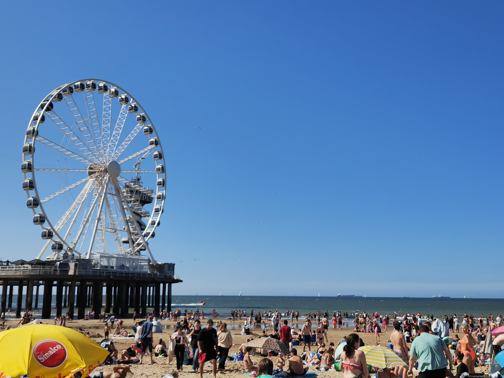
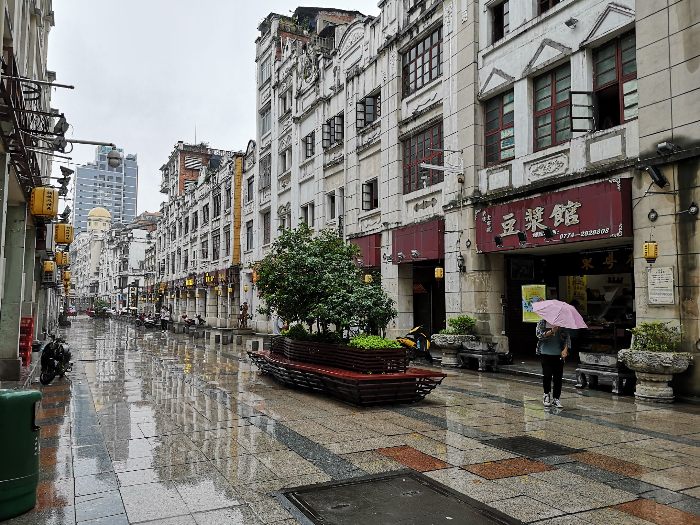
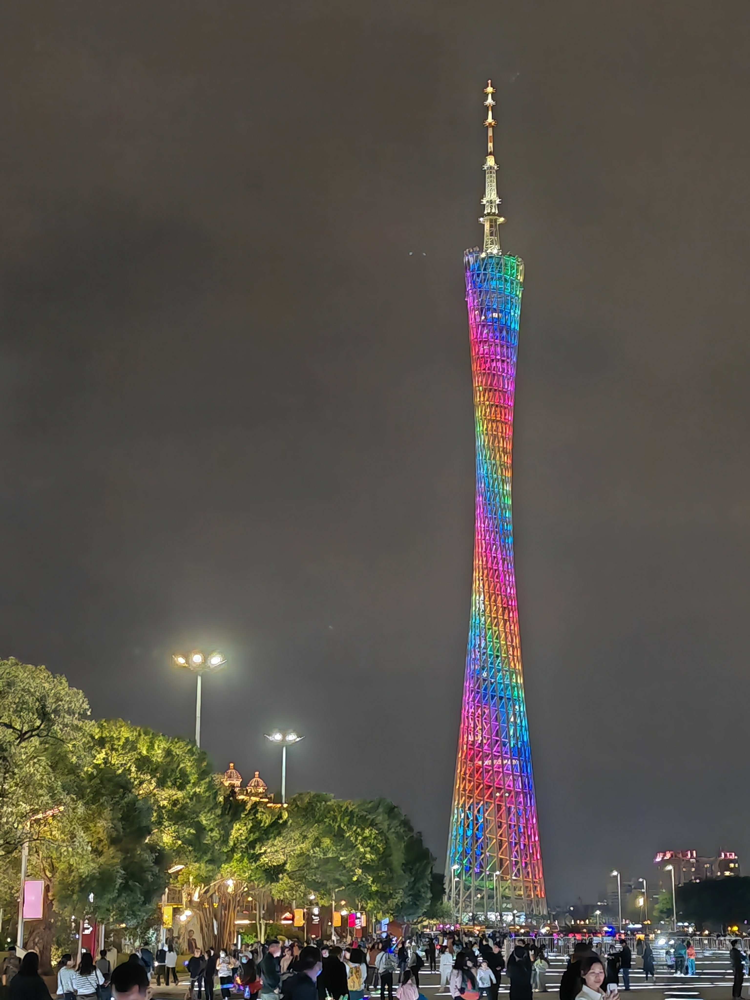
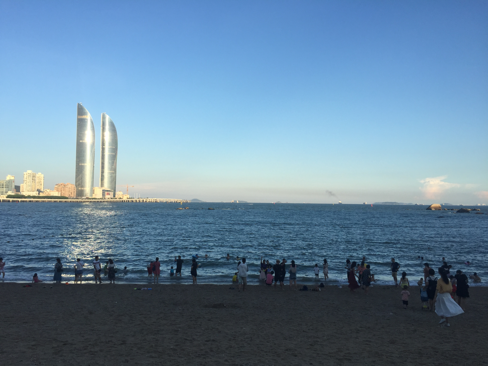

21
广西南宁
武汉大学
地理信息科学（数字地图与空间信息工程）
2022302051046
2004-04-15
地理信息科学（数字地图与空间信息工程）专业
主修地理信息系统原理、空间分析、空间数据库、WebGIS与位置服务等课程
2019级理科实验9班
曾任班长、语文科代表
2016级13班
使用ArcGIS Pro等桌面软件对带有复杂属性的空间信息以地图的方式呈现
使用Python等数据分析工具，结合ArcGIS实现空间数据的清洗、整理、分析
使用GeoScene Online、MapBox等在线制图平台进行动态创意地图的设计与制作
使用HTML+CSS+JavaScript+MapBox API进行WebGIS开发
基于ArcEngine框架，使用C#进行ArcMap二次开发
结合国土空间规划专业知识完成国土空间规划案与规划图制作
唯有足球不可辜负

见世面就是看见世界的每一面
光影斑驳中窥见一段人生
一来一往间挥洒汗水
读书是一个人的狂欢
粤菜乃人间第一仙品
点击地图右侧的按钮可对地图中的足迹点进行相关操作，点击地图中的足迹点可查看详细信息
鼠标移动至卡片上方可查看城市信息与查询城市实时天气




+86 133 7700 4415
1216072419@qq.com
http://47.111.136.83:8080/ourPages2/he.html
https://github.com/ChanfHo